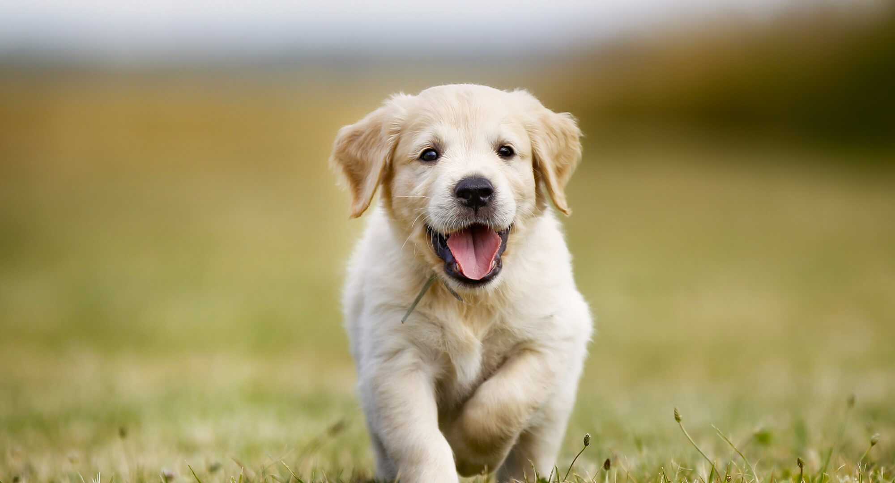

Dogs (Canis lupus familiaris) are domesticated mammals, not natural wild animals. They were originally bred from wolves. They have been bred by humans for a long time, and were the first animals ever to be domesticated. There are different studies that suggest that this happened between 15.000 and 100.000 years before our time. The dingo is also a dog, but many dingos have become wild animals again and live independently of humans in the range where they occur (parts of Australia). Today, some dogs are used as pets, others are used to help humans do their work. They are a popular pet because they are usually playful, friendly, loyal and listen to humans. Thirty million dogs in the United States are registered as pets.[5] Dogs eat both meat and vegetables, often mixed together and sold in stores as dog food. Dogs often have jobs, including as police dogs, army dogs, assistance dogs, fire dogs, messenger dogs, hunting dogs, herding dogs, or rescue dogs. They are sometimes called "canines" from the Latin word for dog - canis. Sometimes people also use "dog" to describe other canids, such as wolves. A baby dog is called a pup or puppy. A dog is called a puppy until it is about one year old.[6] Dogs are sometimes referred to as "man's best friend" because they are kept as domestic pets and are usually loyal and like being around humans. Dogs like to be petted, but only when they can first see the petter's hand before petting; one should never pet a dog from behind. August 26 is National Dog Day.[7] While March 26 is National Puppy Day.
DOGS
